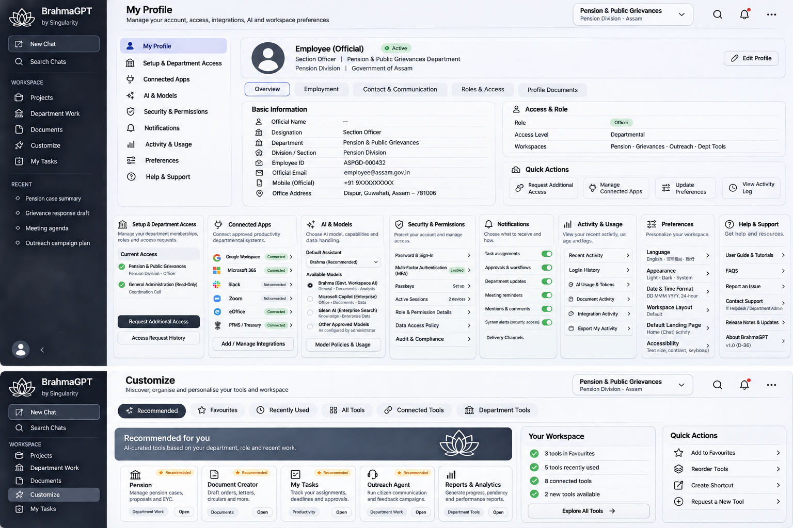
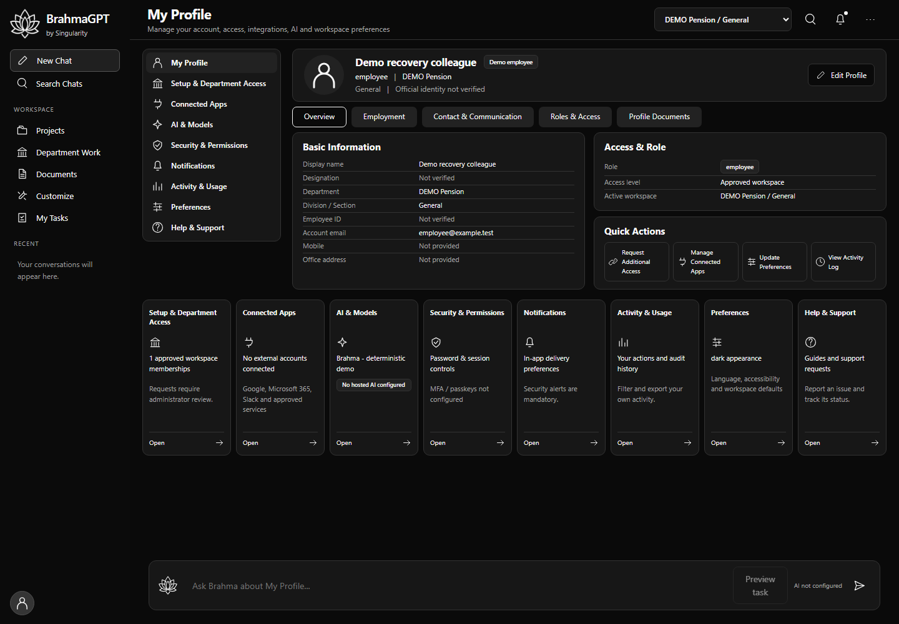
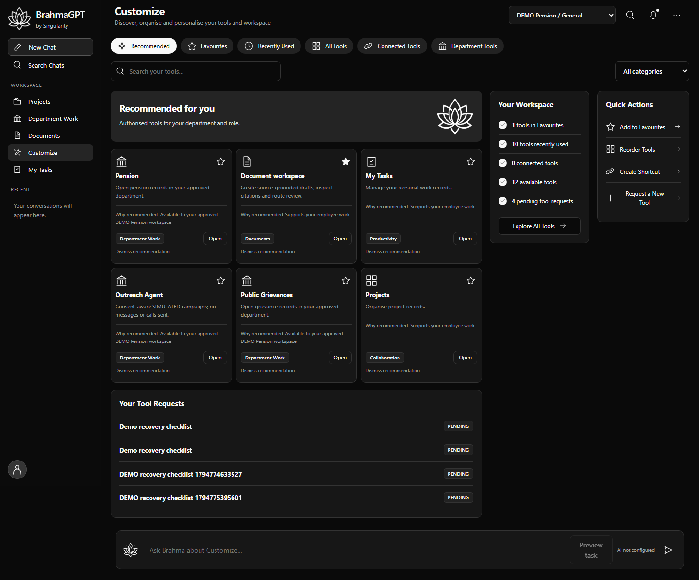

Supplied reference

Current My Profile

Current Customize

Conceptual reference is shown in grayscale. Current captures contain fictional demo data and the selected monochrome theme. Different data and responsive density are documented, not claimed pixel-identical.


